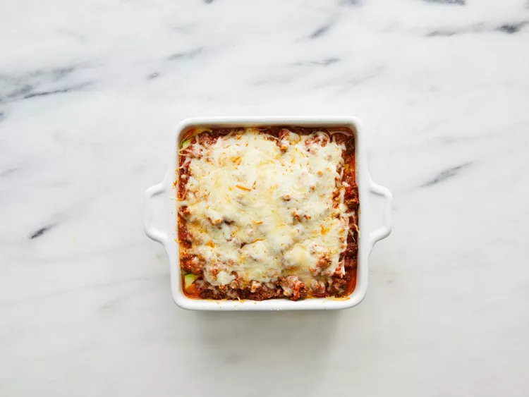
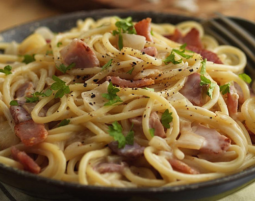

Title 1: Lasagna

Lasagna Recipe (for 4 servings)
Lasagna is a delicious and hearty Italian dish that's easy to make at home. Layers of pasta, Bolognese sauce, and béchamel sauce create a harmonious blend of flavors, while the cheese gives it a golden crust on top. This recipe is perfect for a cozy family dinner or hosting guests.
To make lasagna, first prepare the meat sauce with ground beef, tomatoes, and spices, then cook the béchamel sauce separately. Then layer the lasagna sheets with meat sauce, béchamel, and cheese. Bake it all until golden brown in the oven.
Ingredients:
- Lasagna sheets – 9 pieces
- Ground beef – 500 g
- Onion – 1
- Garlic – 2 cloves
- Canned tomatoes – 400 g
- Tomato paste – 2 tbsp
- Flour – 2 tbsp
- Milk – 500 ml
- Butter – 50 g
- Cheese (mozzarella or parmesan) – 200 g
- Olive oil, salt, pepper, oregano – to taste
Cooking Instructions:
- Sauté the onion and garlic in olive oil.
- Add the ground beef and cook until browned.
- Add tomatoes and tomato paste, season, and simmer for 15 minutes.
- For the béchamel, melt butter, stir in flour, and gradually add milk until thickened.
- n a baking dish, layer lasagna sheets, meat sauce, béchamel, and cheese. Repeat 2–3 times.
- Bake at 180°C (350°F) for 35–40 minutes until golden.
- Let rest for 10 minutes before serving.
Title 2: Pasta Carbonara

Pasta Carbonara (for 2 servings)
Carbonara is a true Italian classic made with just a few ingredients but full of flavor. The creamy sauce is made without cream — just eggs, cheese, and pasta water, giving it a silky and rich texture. The key is controlling the heat so the eggs don't scramble.
It takes under 20 minutes to prepare. Fry the bacon, boil the pasta, whisk the eggs with cheese, and quickly mix everything together in one pan. Serve immediately while it's hot and delicious.
Ingredients:
- Spaghetti – 200 g
- Eggs – 2 (2 yolks + 1 whole)
- Bacon or pancetta – 100 g
- Parmesan or Pecorino cheese – 50 g
- Black pepper – to taste
- Salt – to taste
Cooking Instructions:
- Cook the spaghetti in salted water until al dente.
- Dice and fry the bacon until crispy.
- Whisk eggs with grated cheese and pepper.
- Drain pasta, saving 50 ml of pasta water.
- Quickly mix the hot pasta with the egg-cheese mixture and bacon.
- Add some pasta water and stir until creamy.
- Serve immediately with more cheese and pepper.
Title 3: Chicken in Creamy Mushroom Sauce
Home